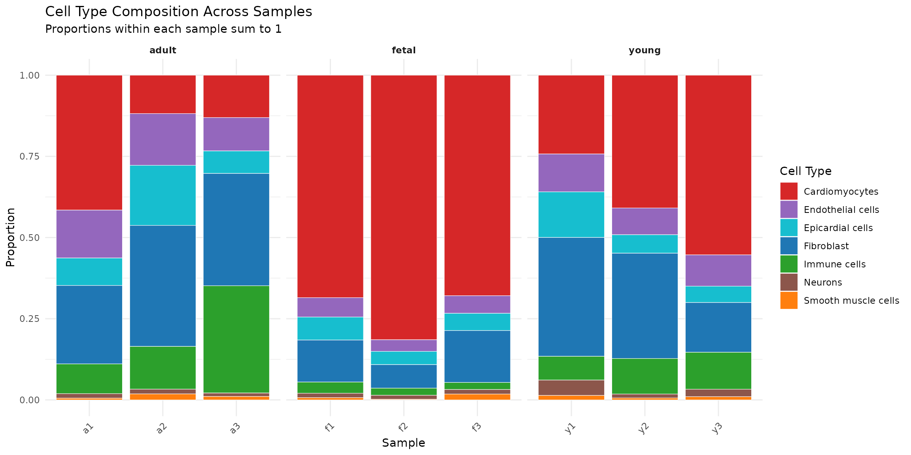
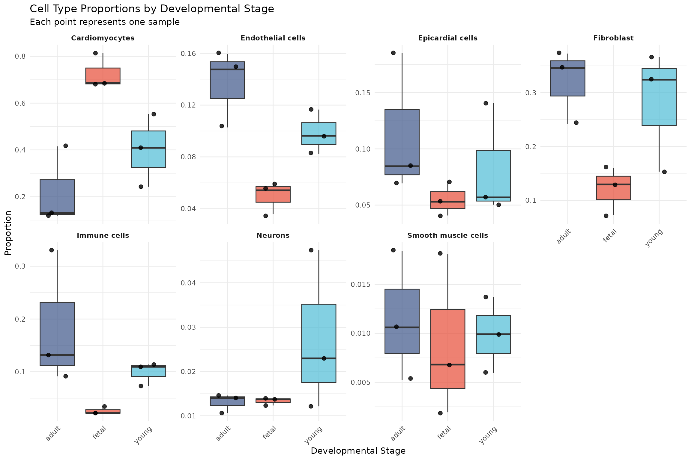
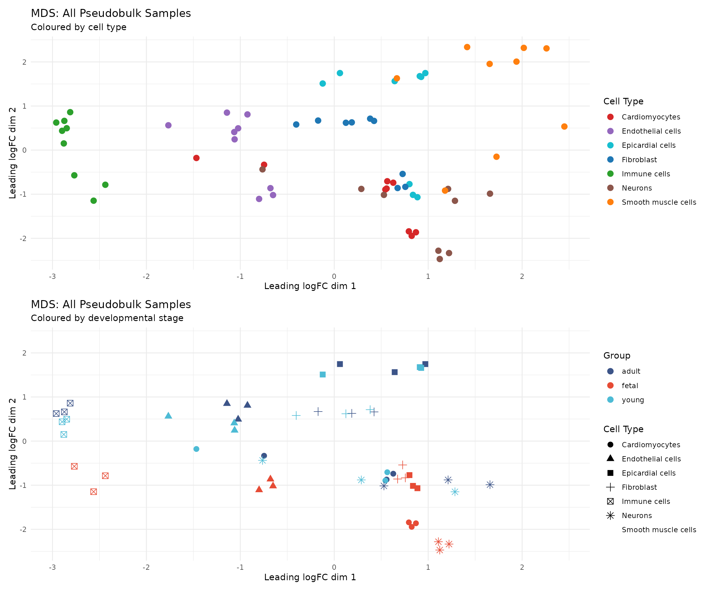
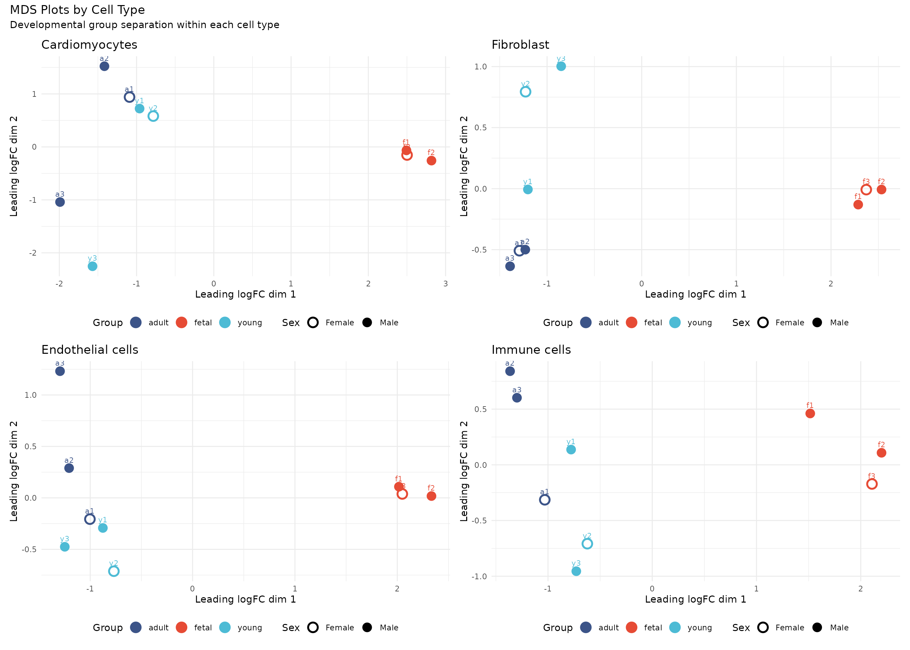
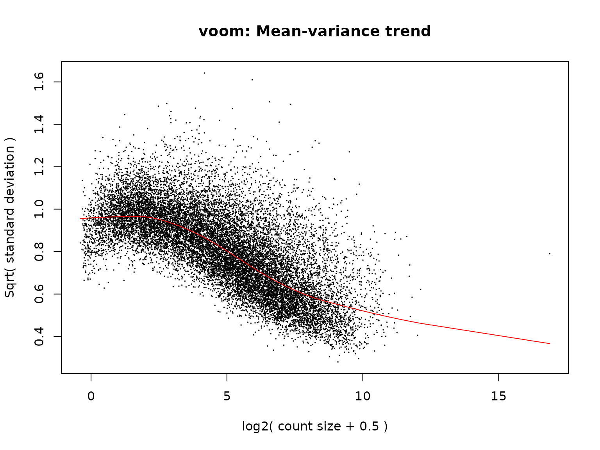
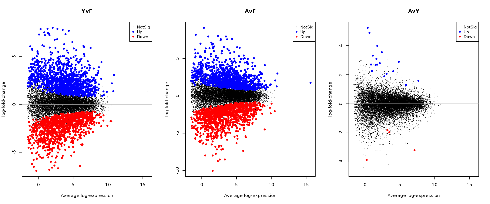
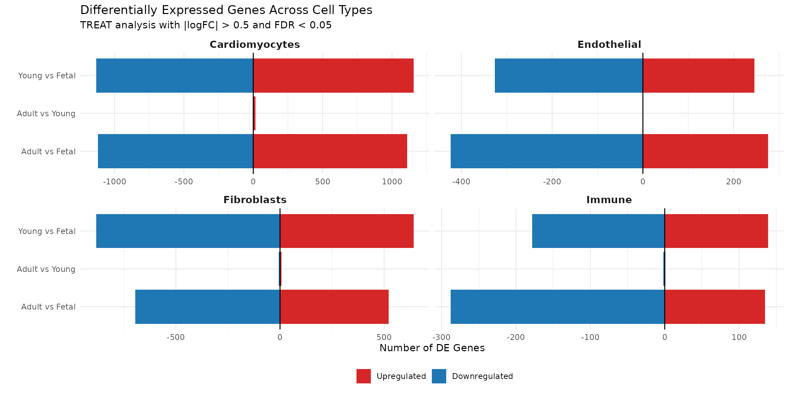
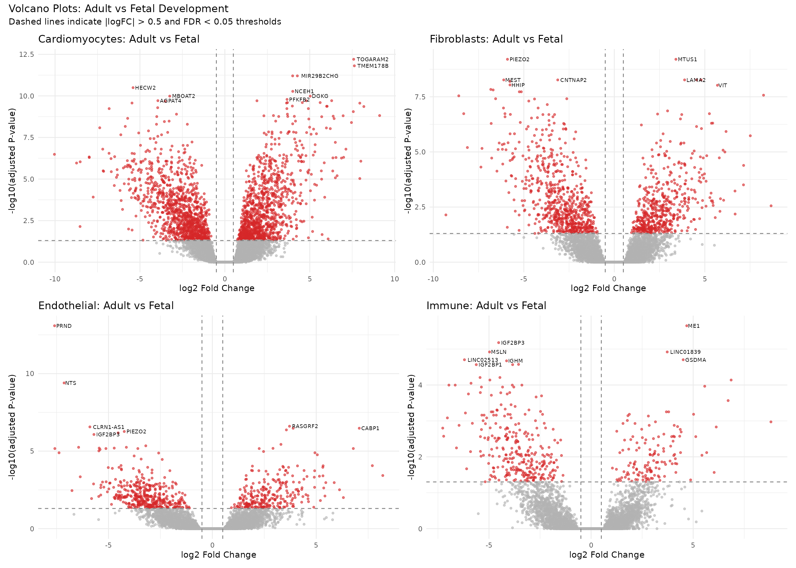
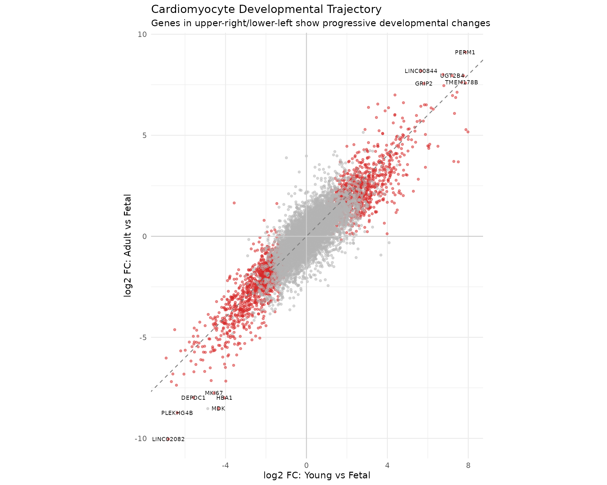

Module 4: Differential Expression Analysis
Single Cell Workshop
2026-01-14
Source:vignettes/04_differential_expression.Rmd
04_differential_expression.RmdIntroduction
Differential expression (DE) analysis identifies genes whose expression levels differ significantly between experimental conditions. In single cell studies, this typically involves comparing gene expression across developmental stages, disease states, or treatment conditions. However, the statistical approach requires careful consideration of the study design.
About This Dataset
The data we are analysing comes from the study by Sim et al. (2021) published in Circulation, titled “Sex-Specific Control of Human Heart Maturation by the Progesterone Receptor”. This study performed single-nucleus RNA sequencing (snRNA-seq) of 54,140 nuclei from 9 human donors to profile transcriptional changes during heart maturation from fetal stages to adulthood. The original study identified:
- Cell type composition changes: A significant expansion of cardiac fibroblasts and immune cells in the postnatal heart, accompanied by a decrease in cardiomyocyte proportions
- Transcriptional maturation: Profound changes in all cardiac cell types, with the largest number of differentially expressed genes in cardiomyocytes
- Sex-specific programmes: Sexually dimorphic gene expression that emerges primarily during adulthood
- Metabolic maturation: Cardiomyocyte maturation was associated with repression of cell cycle genes and activation of oxidative phosphorylation and respiratory electron transport pathways
In this module, we will reproduce key aspects of this analysis using the pseudobulk differential expression approach employed in the original study.
The Pseudoreplication Problem
A critical pitfall in single cell differential expression analysis is pseudoreplication: treating cells as independent biological replicates when they are not. Cells from the same sample share technical and biological variation that violates the independence assumption of statistical tests.
Consider this analogy: if we want to compare heights between two populations, measuring the same person multiple times does not increase our sample size. Similarly, capturing 5,000 cells from one individual does not give us 5,000 independent observations of that individual’s biology.
Many single cell DE methods (Wilcoxon test, t-test, MAST) operate at the cell level and treat each cell as an independent replicate. These approaches:
- Inflate Type I error rates (false positives) dramatically
- Produce artificially small p-values that do not reflect true significance
- Confound biological with technical variation
- Cannot generalise findings beyond the specific samples analysed
The solution is pseudobulk analysis: aggregating counts across cells within each sample to create sample-level expression estimates, then applying well-established bulk RNA-seq methods. This approach:
- Correctly identifies the biological replicate (the sample/individual)
- Properly controls false discovery rates
- Accounts for sample-to-sample variation
- Produces results that generalise to the population
Study Design Considerations
Our dataset contains 9 samples across 3 developmental stages:
| Group | Samples | Sex Distribution |
|---|---|---|
| Fetal | f1, f2, f3 | 2 male, 1 female |
| Young | y1, y2, y3 | 2 male, 1 female |
| Adult | a1, a2, a3 | 1 male, 2 female |
With n=3 per group, statistical power is limited. This is a common constraint in single cell studies due to the cost of sample collection and sequencing. We must interpret results with appropriate caution and avoid over-claiming the significance of findings.
The unbalanced sex distribution across groups is another consideration. We address this by including sex in our statistical model, though the small sample sizes limit our ability to fully disentangle sex and developmental effects.
Learning Objectives
By the end of this module, you will be able to:
- Understand why pseudobulk analysis is necessary for single cell DE
- Perform appropriate gene filtering for DE analysis
- Create pseudobulk expression matrices stratified by cell type and sample
- Apply the limma-voom pipeline for differential expression
- Interpret and visualise DE results critically
- Understand the limitations imposed by sample size
Load Data
We load the QC-filtered Seurat object from Module 1, which contains
cells that passed our quality control criteria. The pseudobulk approach
aggregates raw counts, so we extract the count matrix from the RNA
assay. Cell type labels come from the original study annotations in
cellinfo_updated.Rds.
data_dir <- "../data"
# Load QC-filtered Seurat object from Module 1
seu <- readRDS(file.path(data_dir, "processed/01_qc_filtered.rds"))
# Extract raw counts (not normalised - pseudobulk uses raw counts)
counts <- GetAssayData(seu, assay = "RNA", layer = "counts")
# Load cell metadata with cell type annotations from original study
cellinfo <- readRDS(file.path(data_dir, "cellinfo_updated.Rds"))
# Match cellinfo to QC-filtered cells
cellinfo <- cellinfo[match(colnames(seu), cellinfo$CellID), ]
cat("QC-filtered dataset:\n")## QC-filtered dataset:## - Genes: 18,953## - Cells: 47,405Examine Cell Type Labels
The cell metadata contains cell type annotations from the original
study. We use the Celltype column which provides broad cell
type classifications:
# Cell type distribution in QC-filtered data
cat("Cell type distribution:\n")## Cell type distribution:##
## Cardiomyocytes Endothelial cells Epicardial cells Erythroid
## 26677 3727 3397 56
## Fibroblast Immune cells Neurons Smooth muscle cells
## 9160 3145 818 425
# Cell type by developmental stage
cat("\nCell type by developmental stage:\n")##
## Cell type by developmental stage:##
## adult fetal young
## Cardiomyocytes 2129 18957 5591
## Endothelial cells 1131 1250 1346
## Epicardial cells 905 1381 1111
## Erythroid 0 56 0
## Fibroblast 2361 2974 3825
## Immune cells 1114 662 1369
## Neurons 107 341 370
## Smooth muscle cells 82 209 134Define Colour Palettes
# Developmental group colours
group_colors <- c(
"fetal" = "#E64B35",
"young" = "#4DBBD5",
"adult" = "#3C5488"
)
# Cell type colours
celltype_colors <- c(
"Cardiomyocytes" = "#D62728",
"Fibroblast" = "#1F77B4",
"Endothelial cells" = "#9467BD",
"Immune cells" = "#2CA02C",
"Smooth muscle cells" = "#FF7F0E",
"Epicardial cells" = "#17BECF",
"Neurons" = "#8C564B",
"Erythroid" = "#E377C2"
)Gene Annotation
We retrieve gene annotations for displaying results (gene names in output tables). Note that gene filtering was already performed in Module 1.
# Get gene annotation for output tables
gene_symbols <- rownames(counts)
ann <- AnnotationDbi::select(
org.Hs.eg.db,
keys = gene_symbols,
columns = c("SYMBOL", "ENTREZID", "GENENAME"),
keytype = "SYMBOL"
)
# Handle genes with multiple mappings
ann <- ann[!duplicated(ann$SYMBOL), ]
ann <- ann[match(gene_symbols, ann$SYMBOL), ]
cat("Genes with annotation:", sum(!is.na(ann$GENENAME)), "/", length(gene_symbols), "\n")## Genes with annotation: 18953 / 18953Prepare Data for Pseudobulk Analysis
Quality control (cell and gene filtering) was completed in Module 1. We now prepare the data for pseudobulk differential expression analysis.
Exclude Erythroid Cells
Erythroid cells represent a small population that may be contaminants. We exclude them from DE analysis:
# Check for erythroid cells
n_erythroid <- sum(cellinfo$Celltype == "Erythroid", na.rm = TRUE)
cat("Erythroid cells found:", n_erythroid, "\n")## Erythroid cells found: 56
# Remove erythroid cells if present
if (n_erythroid > 0) {
cells_keep <- cellinfo$Celltype != "Erythroid"
cellinfo_filtered <- cellinfo[cells_keep, ]
counts_filtered <- counts[, cells_keep]
} else {
cellinfo_filtered <- cellinfo
counts_filtered <- counts
}
cat("Cells for DE analysis:", ncol(counts_filtered), "\n")## Cells for DE analysis: 47349
cat("\nCell type distribution:\n")##
## Cell type distribution:##
## Cardiomyocytes Endothelial cells Epicardial cells Fibroblast
## 26677 3727 3397 9160
## Immune cells Neurons Smooth muscle cells
## 3145 818 425Note: Gene filtering (mitochondrial, ribosomal, sex chromosome, and unannotated genes) was performed in Module 1. Filtering of lowly expressed genes is performed later using
edgeR::filterByExpr(), which applies appropriate thresholds based on the pseudobulk sample structure.
Cell Type Composition Analysis
Before examining gene expression changes, we first ask: does the cellular composition of the heart change during development? This is an important biological question because changes in cell type proportions can:
- Reflect biological processes such as cell proliferation, migration, or death
- Influence tissue function independently of gene expression changes
- Confound bulk RNA-seq analysis (where expression changes may simply reflect composition changes)
The original study by Sim et al. (2021) found that cardiac maturation was associated with a significant expansion in the relative proportion of cardiac fibroblasts and immune cells, accompanied by a significant decrease in the proportion of cardiomyocytes (Figure 1C in the paper). We can test this using the propeller method from the speckle package.
Why Use propeller?
Cell type proportions are compositional data: they must sum to 1 within each sample. This creates dependencies between cell types—if one proportion increases, others must decrease. Standard statistical tests (t-tests, ANOVA) ignore this constraint and can produce misleading results.
The propeller() function addresses this by:
- Applying appropriate transformations to proportional data
- Using empirical Bayes moderation for robust variance estimation
- Properly accounting for the nested structure (cells within samples)
Calculate Cell Type Proportions
# Calculate cell counts per sample and cell type
composition_data <- cellinfo_filtered %>%
group_by(Sample, Group, Celltype) %>%
summarise(n_cells = n(), .groups = "drop") %>%
group_by(Sample) %>%
mutate(
total_cells = sum(n_cells),
proportion = n_cells / total_cells
) %>%
ungroup()
# Display summary
cat("Cells per sample:\n")## Cells per sample:## # A tibble: 9 × 3
## Sample Group total_cells
## <chr> <chr> <int>
## 1 a1 adult 3998
## 2 a2 adult 2605
## 3 a3 adult 1226
## 4 f1 fetal 7935
## 5 f2 fetal 10369
## 6 f3 fetal 7470
## 7 y1 young 4306
## 8 y2 young 4695
## 9 y3 young 4745Visualise Composition Changes
# Stacked bar plot of cell type proportions
ggplot(composition_data, aes(x = Sample, y = proportion, fill = Celltype)) +
geom_bar(stat = "identity", colour = "white", linewidth = 0.2) +
scale_fill_manual(values = celltype_colors) +
facet_grid(~ Group, scales = "free_x", space = "free_x") +
labs(
title = "Cell Type Composition Across Samples",
subtitle = "Proportions within each sample sum to 1",
x = "Sample",
y = "Proportion",
fill = "Cell Type"
) +
theme_minimal() +
theme(
legend.position = "right",
axis.text.x = element_text(angle = 45, hjust = 1),
strip.text = element_text(face = "bold")
)
# Boxplot of cell type proportions by developmental stage
ggplot(composition_data, aes(x = Group, y = proportion, fill = Group)) +
geom_boxplot(outlier.shape = NA, alpha = 0.7) +
geom_jitter(width = 0.2, size = 2, alpha = 0.8) +
scale_fill_manual(values = group_colors) +
facet_wrap(~ Celltype, scales = "free_y", ncol = 4) +
labs(
title = "Cell Type Proportions by Developmental Stage",
subtitle = "Each point represents one sample",
x = "Developmental Stage",
y = "Proportion"
) +
theme_minimal() +
theme(
legend.position = "none",
strip.text = element_text(face = "bold"),
axis.text.x = element_text(angle = 45, hjust = 1)
)
Interpretation: Visual inspection suggests that cardiomyocyte proportions decrease from fetal to adult stages, while fibroblast and immune cell proportions appear to increase. However, we need formal statistical testing to determine whether these differences are significant given the sample variability.
Statistical Testing with propeller
The propeller() function tests for differences in cell
type proportions between groups while properly handling the
compositional nature of the data:
# Prepare data for propeller
# Need vectors of: clusters (cell types), samples, and groups
clusters <- cellinfo_filtered$Celltype
samples <- cellinfo_filtered$Sample
# Map samples to groups
sample_to_group <- cellinfo_filtered %>%
select(Sample, Group) %>%
distinct() %>%
{ setNames(.$Group, .$Sample) }
groups <- sample_to_group[samples]
# Run propeller test comparing developmental groups
# This tests whether cell type proportions differ between fetal, young, and adult
propeller_results <- propeller(
clusters = clusters,
sample = samples,
group = groups
)
# Display results
cat("Propeller Test Results: Cell Type Composition Changes\n")## Propeller Test Results: Cell Type Composition Changes
cat("======================================================\n\n")## ======================================================
print(propeller_results)## BaselineProp PropMean.adult PropMean.fetal PropMean.young
## Cardiomyocytes 0.563412110 0.22139920 0.726306287 0.401684990
## Immune cells 0.066421677 0.18451941 0.025994487 0.098811970
## Fibroblast 0.193457095 0.32006855 0.120641229 0.281129831
## Endothelial cells 0.078713384 0.13655202 0.049910648 0.098440512
## Neurons 0.017275972 0.01306597 0.013334485 0.027495960
## Epicardial cells 0.071743859 0.11296741 0.054877394 0.082579815
## Smooth muscle cells 0.008975902 0.01142744 0.008935469 0.009856922
## Fstatistic P.Value FDR
## Cardiomyocytes 12.9210032 0.0002597433 0.001556095
## Immune cells 11.7120982 0.0004445985 0.001556095
## Fibroblast 5.2176310 0.0151856215 0.035433117
## Endothelial cells 4.5516336 0.0237056743 0.041484930
## Neurons 1.4626661 0.2556889886 0.311072777
## Epicardial cells 1.4146330 0.2666338091 0.311072777
## Smooth muscle cells 0.5677644 0.5757903786 0.575790379
# Identify significant changes
sig_celltypes <- propeller_results %>%
filter(FDR < 0.05)
if (nrow(sig_celltypes) > 0) {
cat("\nCell types with significant composition changes (FDR < 0.05):\n")
# Display columns relevant to our 3-group comparison
print(sig_celltypes[, c("PropMean.fetal", "PropMean.young",
"PropMean.adult", "Fstatistic", "FDR")])
} else {
cat("\nNo cell types showed statistically significant composition changes.\n")
cat("This may reflect limited statistical power with n=3 samples per group.\n")
}##
## Cell types with significant composition changes (FDR < 0.05):
## PropMean.fetal PropMean.young PropMean.adult Fstatistic
## Cardiomyocytes 0.72630629 0.40168499 0.2213992 12.921003
## Immune cells 0.02599449 0.09881197 0.1845194 11.712098
## Fibroblast 0.12064123 0.28112983 0.3200686 5.217631
## Endothelial cells 0.04991065 0.09844051 0.1365520 4.551634
## FDR
## Cardiomyocytes 0.001556095
## Immune cells 0.001556095
## Fibroblast 0.035433117
## Endothelial cells 0.041484930Interpretation: The propeller test reveals statistically significant changes in cell type composition during heart development (FDR < 0.05):
- Cardiomyocytes show the most dramatic change, decreasing from ~73% in fetal hearts to ~40% in young and ~22% in adult hearts (FDR = 0.002)
- Immune cells increase substantially, from ~3% in fetal to ~10% in young and ~18% in adult hearts (FDR = 0.002)
- Fibroblasts increase from ~12% in fetal to ~28% in young and ~32% in adult hearts (FDR = 0.035)
- Endothelial cells increase from ~5% in fetal to ~10% in young and ~14% in adult hearts (FDR = 0.041)
These findings align closely with those reported by Sim et al. (2021), who found significant expansion of cardiac fibroblasts and immune cells, accompanied by a decrease in cardiomyocyte proportions. The biological interpretation is that as the heart matures, the relative contribution of non-myocyte populations increases as the tissue develops its supporting structures (fibroblasts for extracellular matrix, immune cells for tissue homeostasis, endothelial cells for vasculature).
Create Pseudobulk Samples
Aggregation Strategy
We aggregate counts by both cell type and sample, creating one pseudobulk profile for each cell type in each sample. This stratified approach allows us to perform differential expression within each cell type, accounting for the fact that different cell types may respond differently to developmental changes.
# Create factor for cell type
celltype <- factor(cellinfo_filtered$Celltype)
# Create factor for sample with explicit level ordering
sample_factor <- factor(
cellinfo_filtered$Sample,
levels = c("f1", "f2", "f3", "y1", "y2", "y3", "a1", "a2", "a3")
)
# Create combined grouping variable (celltype.sample)
pseudobulk_group <- paste(celltype, sample_factor, sep = ".")
pseudobulk_group <- factor(pseudobulk_group)
cat("Number of pseudobulk samples:", length(levels(pseudobulk_group)), "\n")## Number of pseudobulk samples: 63
cat("\nCells per pseudobulk sample:\n")##
## Cells per pseudobulk sample:## pseudobulk_group
## Cardiomyocytes.a1 Cardiomyocytes.a2 Cardiomyocytes.a3
## 1661 308 160
## Cardiomyocytes.f1 Cardiomyocytes.f2 Cardiomyocytes.f3
## 5436 8448 5073
## Cardiomyocytes.y1 Cardiomyocytes.y2 Cardiomyocytes.y3
## 1045 1920 2626
## Endothelial cells.a1 Endothelial cells.a2 Endothelial cells.a3
## 590 415 126
## Endothelial cells.f1 Endothelial cells.f2 Endothelial cells.f3
## 474 371 405
## Endothelial cells.y1 Endothelial cells.y2 Endothelial cells.y3
## 502 387 457
## Epicardial cells.a1 Epicardial cells.a2 Epicardial cells.a3
## 338 482 85
## Epicardial cells.f1 Epicardial cells.f2 Epicardial cells.f3
## 562 423 396
## Epicardial cells.y1 Epicardial cells.y2 Epicardial cells.y3
## 605 267 239
## Fibroblast.a1 Fibroblast.a2 Fibroblast.a3
## 966 971 424
## Fibroblast.f1 Fibroblast.f2 Fibroblast.f3
## 1027 752 1195
## Fibroblast.y1 Fibroblast.y2 Fibroblast.y3
## 1576 1522 727
## Immune cells.a1 Immune cells.a2 Immune cells.a3
## 366 343 405
## Immune cells.f1 Immune cells.f2 Immune cells.f3
## 273 227 162
## Immune cells.y1 Immune cells.y2 Immune cells.y3
## 315 514 540
## Neurons.a1 Neurons.a2 Neurons.a3
## 56 38 13
## Neurons.f1 Neurons.f2 Neurons.f3
## 109 128 104
## Neurons.y1 Neurons.y2 Neurons.y3
## 204 57 109
## Smooth muscle cells.a1 Smooth muscle cells.a2 Smooth muscle cells.a3
## 21 48 13
## Smooth muscle cells.f1 Smooth muscle cells.f2 Smooth muscle cells.f3
## 54 20 135
## Smooth muscle cells.y1 Smooth muscle cells.y2 Smooth muscle cells.y3
## 59 28 47Aggregate Counts
We use matrix multiplication with a design matrix to efficiently aggregate counts. This is equivalent to summing counts across all cells within each pseudobulk group:
# Create design matrix for aggregation
design_agg <- model.matrix(~ 0 + pseudobulk_group)
colnames(design_agg) <- levels(pseudobulk_group)
# Aggregate counts by matrix multiplication
# Each column of the result is the sum of counts for all cells in that group
pb_counts <- as.matrix(counts_filtered) %*% design_agg
cat("Pseudobulk matrix dimensions:\n")## Pseudobulk matrix dimensions:## - Genes: 18953## - Samples: 63Create DGEList Object
The DGEList object from edgeR is the standard
container for count data in the limma-voom pipeline. It stores counts,
library sizes, and sample information:
# Create DGEList
dge <- DGEList(counts = pb_counts)
# Parse sample information from column names
sample_info <- data.frame(
pseudobulk_id = colnames(dge),
stringsAsFactors = FALSE
)
# Extract cell type and sample from the combined name
parsed <- strsplit(sample_info$pseudobulk_id, "\\.")
sample_info$celltype <- sapply(parsed, `[`, 1)
sample_info$sample <- sapply(parsed, `[`, 2)
# Add developmental group (keep as character to avoid factor level issues)
sample_info$group <- case_when(
grepl("^f", sample_info$sample) ~ "fetal",
grepl("^y", sample_info$sample) ~ "young",
grepl("^a", sample_info$sample) ~ "adult"
)
# Add sex information from cellinfo (matches actual data)
sex_by_sample <- cellinfo_filtered %>%
distinct(Sample, Sex) %>%
{ setNames(.$Sex, .$Sample) }
sample_info$sex <- sex_by_sample[sample_info$sample]
# Add gene annotation to DGEList (for output tables)
dge$genes <- ann
# Store sample information
# Note: DGEList creates a default 'group' column (all 1s), so we remove it first
dge$samples <- cbind(dge$samples[, c("lib.size", "norm.factors")], sample_info)
head(dge$samples)## lib.size norm.factors pseudobulk_id celltype sample
## Cardiomyocytes.a1 32392120 1 Cardiomyocytes.a1 Cardiomyocytes a1
## Cardiomyocytes.a2 7280354 1 Cardiomyocytes.a2 Cardiomyocytes a2
## Cardiomyocytes.a3 2715798 1 Cardiomyocytes.a3 Cardiomyocytes a3
## Cardiomyocytes.f1 59294709 1 Cardiomyocytes.f1 Cardiomyocytes f1
## Cardiomyocytes.f2 82244242 1 Cardiomyocytes.f2 Cardiomyocytes f2
## Cardiomyocytes.f3 72452381 1 Cardiomyocytes.f3 Cardiomyocytes f3
## group sex
## Cardiomyocytes.a1 adult f
## Cardiomyocytes.a2 adult m
## Cardiomyocytes.a3 adult m
## Cardiomyocytes.f1 fetal m
## Cardiomyocytes.f2 fetal m
## Cardiomyocytes.f3 fetal fExploratory Data Analysis
Before conducting formal statistical tests, we examine the overall structure of the data using multidimensional scaling (MDS). This unsupervised approach reveals the major sources of variation in the dataset.
MDS Plot Overview
# Calculate MDS for all samples
mds <- plotMDS(dge, plot = FALSE, gene.selection = "common")
# Create plotting data frame
mds_data <- data.frame(
Dim1 = mds$x,
Dim2 = mds$y,
celltype = dge$samples$celltype,
group = dge$samples$group,
sex = dge$samples$sex,
sample = dge$samples$sample
)
# Plot by cell type
p1 <- ggplot(mds_data, aes(x = Dim1, y = Dim2, colour = celltype)) +
geom_point(size = 3) +
scale_colour_manual(values = celltype_colors) +
labs(
title = "MDS: All Pseudobulk Samples",
subtitle = "Coloured by cell type",
x = "Leading logFC dim 1",
y = "Leading logFC dim 2",
colour = "Cell Type"
) +
theme_minimal() +
theme(legend.position = "right")
# Plot by developmental group
p2 <- ggplot(mds_data, aes(x = Dim1, y = Dim2, colour = group, shape = celltype)) +
geom_point(size = 3) +
scale_colour_manual(values = group_colors) +
labs(
title = "MDS: All Pseudobulk Samples",
subtitle = "Coloured by developmental stage",
x = "Leading logFC dim 1",
y = "Leading logFC dim 2",
colour = "Group",
shape = "Cell Type"
) +
theme_minimal() +
theme(legend.position = "right")
p1 / p2
Interpretation: The MDS plot reveals that the primary axis of variation corresponds to cell type identity. This is expected and biologically sensible: cardiomyocytes, fibroblasts, and immune cells have fundamentally different transcriptional programmes. Developmental differences are secondary sources of variation, visible within cell type clusters.
MDS by Cell Type
To better visualise developmental differences, we examine MDS plots for each major cell type separately:
# Function to create MDS plot for a specific cell type
plot_mds_celltype <- function(celltype_name) {
# Subset to this cell type
idx <- dge$samples$celltype == celltype_name
if (sum(idx) < 3) return(NULL)
dge_sub <- dge[, idx]
# Calculate MDS
mds_sub <- plotMDS(dge_sub, plot = FALSE, gene.selection = "common")
# Create plot data
plot_data <- data.frame(
Dim1 = mds_sub$x,
Dim2 = mds_sub$y,
group = dge_sub$samples$group,
sex = dge_sub$samples$sex,
sample = dge_sub$samples$sample
)
# Sex symbols: filled = male, open = female
shape_values <- c("m" = 16, "f" = 1)
ggplot(plot_data, aes(x = Dim1, y = Dim2, colour = group, shape = sex)) +
geom_point(size = 4, stroke = 1.5) +
geom_text(aes(label = sample), vjust = -1, size = 3, show.legend = FALSE) +
scale_colour_manual(values = group_colors) +
scale_shape_manual(values = shape_values, labels = c("f" = "Female", "m" = "Male")) +
labs(
title = celltype_name,
x = "Leading logFC dim 1",
y = "Leading logFC dim 2",
colour = "Group",
shape = "Sex"
) +
theme_minimal() +
theme(legend.position = "bottom")
}
# Create plots for major cell types
celltypes_to_plot <- c("Cardiomyocytes", "Fibroblast", "Endothelial cells", "Immune cells")
mds_plots <- lapply(celltypes_to_plot, plot_mds_celltype)
mds_plots <- mds_plots[!sapply(mds_plots, is.null)]
# Combine plots
wrap_plots(mds_plots, ncol = 2) +
plot_annotation(
title = "MDS Plots by Cell Type",
subtitle = "Developmental group separation within each cell type"
)
Interpretation: Within each cell type, fetal samples tend to separate from young and adult samples along the first MDS dimension. Young and adult samples often overlap, suggesting more transcriptional similarity between postnatal stages than between fetal and postnatal development. The degree of separation varies by cell type, with cardiomyocytes showing particularly clear developmental stratification.
Differential Expression Analysis
Statistical Framework
We use the limma-voom pipeline, which is the gold standard for differential expression analysis of RNA-seq count data. The workflow consists of:
- Filtering: Remove genes with insufficient expression
- Normalisation: Apply TMM (trimmed mean of M-values) normalisation
- Voom transformation: Model the mean-variance relationship
- Linear modelling: Fit linear models with the experimental design
- Empirical Bayes: Moderate test statistics for improved power
We fit a single model containing all cell type × group × sex combinations, then extract contrasts for specific comparisons of interest.
Design Matrix
The design matrix encodes our experimental factors. We use a cell-means parameterisation (no intercept) where each column represents a unique combination of cell type, developmental group, and sex:
# Create short cell type labels for cleaner coefficient names
celltype_short <- dge$samples$celltype
celltype_short <- gsub(" cells", "", celltype_short)
celltype_short <- gsub("Smooth muscle", "SMC", celltype_short)
celltype_short <- tolower(celltype_short)
# Create combined factor for design matrix
design_group <- paste(celltype_short, dge$samples$group, dge$samples$sex, sep = ".")
design_group <- factor(design_group)
# Create design matrix (no intercept = cell means model)
design <- model.matrix(~ 0 + design_group)
colnames(design) <- levels(design_group)
cat("Design matrix dimensions:", nrow(design), "x", ncol(design), "\n")## Design matrix dimensions: 63 x 42
cat("\nDesign matrix coefficients:\n")##
## Design matrix coefficients:## [1] "cardiomyocytes.adult.f" "cardiomyocytes.adult.m" "cardiomyocytes.fetal.f"
## [4] "cardiomyocytes.fetal.m" "cardiomyocytes.young.f" "cardiomyocytes.young.m"
## [7] "endothelial.adult.f" "endothelial.adult.m" "endothelial.fetal.f"
## [10] "endothelial.fetal.m" "endothelial.young.f" "endothelial.young.m"
## [13] "epicardial.adult.f" "epicardial.adult.m" "epicardial.fetal.f"
## [16] "epicardial.fetal.m" "epicardial.young.f" "epicardial.young.m"
## [19] "fibroblast.adult.f" "fibroblast.adult.m" "fibroblast.fetal.f"
## [22] "fibroblast.fetal.m" "fibroblast.young.f" "fibroblast.young.m"
## [25] "immune.adult.f" "immune.adult.m" "immune.fetal.f"
## [28] "immune.fetal.m" "immune.young.f" "immune.young.m"
## [31] "neurons.adult.f" "neurons.adult.m" "neurons.fetal.f"
## [34] "neurons.fetal.m" "neurons.young.f" "neurons.young.m"
## [37] "smc.adult.f" "smc.adult.m" "smc.fetal.f"
## [40] "smc.fetal.m" "smc.young.f" "smc.young.m"Filtering and Normalisation
# Filter genes with low expression using edgeR's filterByExpr
# This removes genes that are not expressed at a biologically meaningful level
keep <- filterByExpr(dge, design = design)
dge_filtered <- dge[keep, , keep.lib.sizes = FALSE]
cat("Genes before filtering:", nrow(dge), "\n")## Genes before filtering: 18953## Genes after filtering: 16085
# Apply TMM normalisation
dge_filtered <- calcNormFactors(dge_filtered, method = "TMM")
cat("\nLibrary sizes and normalisation factors:\n")##
## Library sizes and normalisation factors:## lib.size norm.factors
## Cardiomyocytes.a1 32379510 0.6062195
## Cardiomyocytes.a2 7277544 0.6871822
## Cardiomyocytes.a3 2714040 0.8796562
## Cardiomyocytes.f1 59267741 0.8122854
## Cardiomyocytes.f2 82215178 0.7780581
## Cardiomyocytes.f3 72428402 0.7224807
## Cardiomyocytes.y1 13418896 0.6523640
## Cardiomyocytes.y2 31912809 0.6315278
## Cardiomyocytes.y3 19313451 0.9023738
## Endothelial cells.a1 4125389 1.0507578
## Endothelial cells.a2 2778450 1.0091423
## Endothelial cells.a3 838838 1.1131212
## Endothelial cells.f1 4334507 1.1422059
## Endothelial cells.f2 3826307 1.1090792
## Endothelial cells.f3 5304616 1.0560309
## Endothelial cells.y1 3618850 1.0725650
## Endothelial cells.y2 2958916 0.9896856
## Endothelial cells.y3 2738058 0.9695908
## Epicardial cells.a1 1858312 1.0385323
## Epicardial cells.a2 3758676 0.8723308
## Epicardial cells.a3 637172 1.0710208
## Epicardial cells.f1 5473502 1.1198427
## Epicardial cells.f2 4725334 1.0363738
## Epicardial cells.f3 5804650 0.9882715
## Epicardial cells.y1 3799209 0.9767808
## Epicardial cells.y2 1717993 0.9644361
## Epicardial cells.y3 1343036 0.9462232
## Fibroblast.a1 7750305 1.0867079
## Fibroblast.a2 8812958 0.9867011
## Fibroblast.a3 4052897 1.0859247
## Fibroblast.f1 7830817 1.0555564
## Fibroblast.f2 5476825 1.0310459
## Fibroblast.f3 11550623 1.0052905
## Fibroblast.y1 13480942 0.9618096
## Fibroblast.y2 12218557 0.9621212
## Fibroblast.y3 5870367 0.9887452
## Immune cells.a1 2869009 1.0391055
## Immune cells.a2 2276808 1.0725683
## Immune cells.a3 3192409 1.1483534
## Immune cells.f1 1960762 1.1266492
## Immune cells.f2 1675070 1.1731315
## Immune cells.f3 1580118 1.0676369
## Immune cells.y1 2529505 1.1267478
## Immune cells.y2 3734520 1.0432559
## Immune cells.y3 3091938 1.0305902
## Neurons.a1 328005 1.1719423
## Neurons.a2 218624 1.0640886
## Neurons.a3 74057 1.3408405
## Neurons.f1 769716 1.1090986
## Neurons.f2 1053894 1.0953821
## Neurons.f3 955923 1.0477880
## Neurons.y1 1098075 1.0945203
## Neurons.y2 209762 1.0747981
## Neurons.y3 443229 1.0579727
## Smooth muscle cells.a1 119000 1.1801528
## Smooth muscle cells.a2 389758 0.9537409
## Smooth muscle cells.a3 96593 1.1759140
## Smooth muscle cells.f1 471111 1.0362309
## Smooth muscle cells.f2 145848 1.1343509
## Smooth muscle cells.f3 1682502 0.9653342
## Smooth muscle cells.y1 376185 1.0336519
## Smooth muscle cells.y2 164171 0.9875187
## Smooth muscle cells.y3 305519 0.9628307Voom Transformation
The voom transformation models the mean-variance relationship in the data and assigns precision weights to each observation. This is critical for proper statistical inference:
# Apply voom with cyclic loess normalisation
v <- voom(dge_filtered, design, plot = TRUE, normalize.method = "cyclicloess")
Interpretation: The mean-variance plot shows the relationship between average expression level (x-axis) and variance (y-axis). The red curve represents voom’s fitted mean-variance trend. A well-behaved dataset shows decreasing variance with increasing expression, and the trend should be smooth. Unusual patterns may indicate quality issues or batch effects.Cell Type-Specific Differential Expression
We now perform differential expression analysis for each major cell type, comparing developmental stages while averaging over sex. This approach answers the question: “Which genes change during heart development within each cell type?”
Define Contrasts
For each cell type, we define three contrasts:
- Young vs Fetal: Early postnatal changes
- Adult vs Fetal: Full developmental trajectory
- Adult vs Young: Late maturation changes
We average over sex to obtain marginal developmental effects:
# Function to create contrasts for a cell type
create_celltype_contrasts <- function(ct_short, design) {
# Get coefficient names containing this cell type
coefs <- colnames(design)
ct_coefs <- coefs[grep(paste0("^", ct_short, "\\."), coefs)]
if (length(ct_coefs) < 6) {
warning("Insufficient coefficients for ", ct_short)
return(NULL)
}
# Define contrasts averaging over sex
# Young vs Fetal
yvf <- paste0("0.5*(", ct_short, ".young.m + ", ct_short, ".young.f) - ",
"0.5*(", ct_short, ".fetal.m + ", ct_short, ".fetal.f)")
# Adult vs Fetal
avf <- paste0("0.5*(", ct_short, ".adult.m + ", ct_short, ".adult.f) - ",
"0.5*(", ct_short, ".fetal.m + ", ct_short, ".fetal.f)")
# Adult vs Young
avy <- paste0("0.5*(", ct_short, ".adult.m + ", ct_short, ".adult.f) - ",
"0.5*(", ct_short, ".young.m + ", ct_short, ".young.f)")
# Use contrasts parameter (character vector) to avoid scoping issues
contrast_list <- c(yvf, avf, avy)
cm <- makeContrasts(contrasts = contrast_list, levels = design)
# Set proper column names for the contrast matrix
colnames(cm) <- c("YvF", "AvF", "AvY")
cm
}Cardiomyocyte Differential Expression
Cardiomyocytes are the primary contractile cells of the heart and undergo substantial transcriptional changes during development as they transition from proliferative fetal cells to terminally differentiated adult myocytes.
In the original study by Sim et al. (2021), cardiomyocytes showed the largest number of differentially expressed genes compared to other cardiac cell types (Figure 1E in the paper). The transcriptional changes were characterised by:
- Repression of cell cycle genes: Reflecting the exit from proliferative capacity that occurs during postnatal maturation
- Activation of metabolic genes: Particularly those involved in oxidative phosphorylation, the TCA cycle, and the respiratory electron transport chain, reflecting the metabolic switch from glycolysis to fatty acid oxidation
- Sex-specific transcriptional programmes: More than 2,800 genes showed significant expression differences between adult male and female cardiomyocytes, the majority of which were autosomal genes
# Create contrasts for cardiomyocytes
cont_cardio <- create_celltype_contrasts("cardiomyocytes", design)
# Fit contrasts
fit_cardio <- contrasts.fit(fit, cont_cardio)
fit_cardio <- eBayes(fit_cardio, robust = TRUE)
# Apply TREAT with minimum log-fold-change threshold
# This tests whether the true fold-change exceeds a biologically meaningful threshold
treat_cardio <- treat(fit_cardio, lfc = 0.5)
# Summarise results
cat("Cardiomyocytes: Differential Expression Summary\n")## Cardiomyocytes: Differential Expression Summary
cat("(FDR < 0.05, |logFC| > 0.5)\n\n")## (FDR < 0.05, |logFC| > 0.5)
dt_cardio <- decideTests(treat_cardio)
summary(dt_cardio)## YvF AvF AvY
## Down 1133 1121 4
## NotSig 13795 13854 16064
## Up 1157 1110 17
# MD plots for each contrast
par(mfrow = c(1, 3))
for (i in 1:3) {
plotMD(treat_cardio, coef = i, status = dt_cardio[, i],
hl.col = c("blue", "red"), main = colnames(dt_cardio)[i])
abline(h = 0, col = "grey")
}
Interpretation: The MD (mean-difference) plots show average expression (x-axis) versus log-fold-change (y-axis) for each contrast. Red points indicate genes significantly upregulated in the second condition; blue points indicate downregulated genes. The Adult vs Fetal comparison typically shows the most differentially expressed genes, reflecting the substantial transcriptional remodelling that occurs during cardiac maturation.
# Display top differentially expressed genes for Adult vs Fetal
cat("Top 20 DE genes: Adult vs Fetal Cardiomyocytes\n")## Top 20 DE genes: Adult vs Fetal Cardiomyocytes
topTreat(treat_cardio, coef = "AvF", n = 20)[, c("SYMBOL", "GENENAME", "logFC", "P.Value", "adj.P.Val")]## SYMBOL
## TOGARAM2 TOGARAM2
## TMEM178B TMEM178B
## MIR29B2CHG MIR29B2CHG
## FILIP1L FILIP1L
## HECW2 HECW2
## NCEH1 NCEH1
## MBOAT2 MBOAT2
## DGKG DGKG
## PFKFB2 PFKFB2
## AGPAT4 AGPAT4
## AQP7 AQP7
## AAK1 AAK1
## CFAP61 CFAP61
## FRMD5 FRMD5
## PPP1R13L PPP1R13L
## FYB2 FYB2
## ALS2CL ALS2CL
## CCSER1 CCSER1
## IGF2BP3 IGF2BP3
## CSDC2 CSDC2
## GENENAME
## TOGARAM2 TOG array regulator of axonemal microtubules 2
## TMEM178B transmembrane protein 178B
## MIR29B2CHG MIR29B2 and MIR29C host gene
## FILIP1L filamin A interacting protein 1 like
## HECW2 HECT, C2 and WW domain containing E3 ubiquitin protein ligase 2
## NCEH1 neutral cholesterol ester hydrolase 1
## MBOAT2 membrane bound glycerophospholipid O-acyltransferase 2
## DGKG diacylglycerol kinase gamma
## PFKFB2 6-phosphofructo-2-kinase/fructose-2,6-biphosphatase 2
## AGPAT4 1-acylglycerol-3-phosphate O-acyltransferase 4
## AQP7 aquaporin 7
## AAK1 AP2 associated kinase 1
## CFAP61 cilia and flagella associated protein 61
## FRMD5 FERM domain containing 5
## PPP1R13L protein phosphatase 1 regulatory subunit 13 like
## FYB2 FYN binding protein 2
## ALS2CL ALS2 C-terminal like
## CCSER1 coiled-coil serine rich protein 1
## IGF2BP3 insulin like growth factor 2 mRNA binding protein 3
## CSDC2 cold shock domain containing C2
## logFC P.Value adj.P.Val
## TOGARAM2 7.587000 3.899368e-17 6.272133e-13
## TMEM178B 7.625653 1.926397e-16 1.549305e-12
## MIR29B2CHG 4.268846 1.491658e-15 6.241013e-12
## FILIP1L 3.992102 1.552008e-15 6.241013e-12
## HECW2 -5.405868 9.936295e-15 3.196506e-11
## NCEH1 3.998083 1.985695e-14 5.323316e-11
## MBOAT2 -3.246819 4.667049e-14 1.032247e-10
## DGKG 5.027604 5.133961e-14 1.032247e-10
## PFKFB2 3.661924 9.101528e-14 1.626645e-10
## AGPAT4 -3.943577 1.252613e-13 1.938594e-10
## AQP7 6.290223 1.325740e-13 1.938594e-10
## AAK1 1.890045 1.478445e-13 1.963979e-10
## CFAP61 4.798169 1.587301e-13 1.963979e-10
## FRMD5 -3.514541 1.839919e-13 2.113935e-10
## PPP1R13L 3.686884 2.524058e-13 2.521864e-10
## FYB2 5.612310 2.589991e-13 2.521864e-10
## ALS2CL 4.562674 2.665321e-13 2.521864e-10
## CCSER1 3.630818 3.099571e-13 2.683000e-10
## IGF2BP3 -5.468587 3.169226e-13 2.683000e-10
## CSDC2 7.946951 3.388722e-13 2.725380e-10Fibroblast Differential Expression
Cardiac fibroblasts provide structural support and undergo important changes during development, including alterations in extracellular matrix production.
The original study found that fibroblast maturation was associated with increased interferon signaling capacity (Figure 1G in the paper). Fibroblasts also showed significant expansion in proportion during postnatal development, consistent with the increasing structural complexity of the maturing heart.
# Create contrasts for fibroblasts
cont_fibro <- create_celltype_contrasts("fibroblast", design)
# Fit contrasts
fit_fibro <- contrasts.fit(fit, cont_fibro)
fit_fibro <- eBayes(fit_fibro, robust = TRUE)
# Apply TREAT
treat_fibro <- treat(fit_fibro, lfc = 0.5)
# Summarise results
cat("Fibroblasts: Differential Expression Summary\n")## Fibroblasts: Differential Expression Summary
cat("(FDR < 0.05, |logFC| > 0.5)\n\n")## (FDR < 0.05, |logFC| > 0.5)
dt_fibro <- decideTests(treat_fibro)
summary(dt_fibro)## YvF AvF AvY
## Down 883 695 6
## NotSig 14560 14868 16072
## Up 642 522 7
# Top DE genes
cat("\nTop 20 DE genes: Adult vs Fetal Fibroblasts\n")##
## Top 20 DE genes: Adult vs Fetal Fibroblasts
topTreat(treat_fibro, coef = "AvF", n = 20)[, c("SYMBOL", "GENENAME", "logFC", "P.Value", "adj.P.Val")]## SYMBOL
## PIEZO2 PIEZO2
## MTUS1 MTUS1
## LAMA2 LAMA2
## MEST MEST
## CNTNAP2 CNTNAP2
## LINC02511 LINC02511
## COL28A1 COL28A1
## IGF2BP3 IGF2BP3
## HHIP HHIP
## VIT VIT
## PRSS35 PRSS35
## PEG10 PEG10
## KHDRBS2 KHDRBS2
## GRID2 GRID2
## MANCR MANCR
## TMEM26 TMEM26
## COL6A6 COL6A6
## C11orf87 C11orf87
## SEMA5A SEMA5A
## SAMD5 SAMD5
## GENENAME
## PIEZO2 piezo type mechanosensitive ion channel component 2
## MTUS1 microtubule associated scaffold protein 1
## LAMA2 laminin subunit alpha 2
## MEST mesoderm specific transcript
## CNTNAP2 contactin associated protein 2
## LINC02511 long intergenic non-protein coding RNA 2511
## COL28A1 collagen type XXVIII alpha 1 chain
## IGF2BP3 insulin like growth factor 2 mRNA binding protein 3
## HHIP hedgehog interacting protein
## VIT vitrin
## PRSS35 serine protease 35
## PEG10 paternally expressed 10
## KHDRBS2 KH RNA binding domain containing, signal transduction associated 2
## GRID2 glutamate ionotropic receptor delta type subunit 2
## MANCR mitotically associated long non coding RNA
## TMEM26 transmembrane protein 26
## COL6A6 collagen type VI alpha 6 chain
## C11orf87 chromosome 11 open reading frame 87
## SEMA5A semaphorin 5A
## SAMD5 sterile alpha motif domain containing 5
## logFC P.Value adj.P.Val
## PIEZO2 -5.903270 6.411440e-14 6.292989e-10
## MTUS1 3.403517 7.824668e-14 6.292989e-10
## LAMA2 3.883501 1.208852e-12 5.430662e-09
## MEST -6.108686 1.825539e-12 5.430662e-09
## CNTNAP2 -3.124996 1.904295e-12 5.430662e-09
## LINC02511 4.797146 2.224419e-12 5.430662e-09
## COL28A1 4.547963 2.363359e-12 5.430662e-09
## IGF2BP3 -5.769645 3.152811e-12 6.339120e-09
## HHIP -5.764199 5.119151e-12 9.149061e-09
## VIT 5.699455 5.900527e-12 9.490997e-09
## PRSS35 -6.824149 1.002282e-11 1.465610e-08
## PEG10 -6.694164 1.154682e-11 1.547755e-08
## KHDRBS2 -5.246471 1.602825e-11 1.877958e-08
## GRID2 -5.139266 1.634530e-11 1.877958e-08
## MANCR 8.245547 2.492662e-11 2.672965e-08
## TMEM26 -8.593291 2.843030e-11 2.858133e-08
## COL6A6 -2.625479 4.234987e-11 3.876535e-08
## C11orf87 -6.557953 4.338056e-11 3.876535e-08
## SEMA5A -4.407908 4.708686e-11 3.986274e-08
## SAMD5 -4.724801 6.128396e-11 4.928763e-08Endothelial Cell Differential Expression
Endothelial cells line the cardiac vasculature and play essential roles in angiogenesis during heart development. Similar to fibroblasts, the original study found that endothelial cell maturation was associated with increased interferon signaling capacity. Endothelial cells also contributed substantially to the total number of differentially expressed genes during cardiac maturation (Figure 1E in the paper).
# Create contrasts for endothelial cells
cont_endo <- create_celltype_contrasts("endothelial", design)
# Fit contrasts
fit_endo <- contrasts.fit(fit, cont_endo)
fit_endo <- eBayes(fit_endo, robust = TRUE)
# Apply TREAT
treat_endo <- treat(fit_endo, lfc = 0.5)
# Summarise results
cat("Endothelial Cells: Differential Expression Summary\n")## Endothelial Cells: Differential Expression Summary
cat("(FDR < 0.05, |logFC| > 0.5)\n\n")## (FDR < 0.05, |logFC| > 0.5)
dt_endo <- decideTests(treat_endo)
summary(dt_endo)## YvF AvF AvY
## Down 326 424 0
## NotSig 15513 15385 16085
## Up 246 276 0Immune Cell Differential Expression
Resident immune cells, particularly macrophages, are present in the heart from early development and may have distinct phenotypes across developmental stages. The original study found that immune cell proportions increase significantly during postnatal development (Figure 1C), and that immune cell maturation was associated with enhanced interferon signaling capacity (Figure 1G). With our limited sample size, we may detect fewer DE genes in immune cells compared to the more abundant cardiomyocytes and fibroblasts.
# Create contrasts for immune cells
cont_immune <- create_celltype_contrasts("immune", design)
# Fit contrasts
fit_immune <- contrasts.fit(fit, cont_immune)
fit_immune <- eBayes(fit_immune, robust = TRUE)
# Apply TREAT
treat_immune <- treat(fit_immune, lfc = 0.5)
# Summarise results
cat("Immune Cells: Differential Expression Summary\n")## Immune Cells: Differential Expression Summary
cat("(FDR < 0.05, |logFC| > 0.5)\n\n")## (FDR < 0.05, |logFC| > 0.5)
dt_immune <- decideTests(treat_immune)
summary(dt_immune)## YvF AvF AvY
## Down 178 288 2
## NotSig 15768 15662 16082
## Up 139 135 1Visualisation of DE Results
Summary Across Cell Types
# Compile summary statistics
de_summary <- data.frame(
celltype = rep(c("Cardiomyocytes", "Fibroblasts", "Endothelial", "Immune"), each = 3),
contrast = rep(c("Young vs Fetal", "Adult vs Fetal", "Adult vs Young"), 4),
up = c(
sum(dt_cardio[, 1] == 1), sum(dt_cardio[, 2] == 1), sum(dt_cardio[, 3] == 1),
sum(dt_fibro[, 1] == 1), sum(dt_fibro[, 2] == 1), sum(dt_fibro[, 3] == 1),
sum(dt_endo[, 1] == 1), sum(dt_endo[, 2] == 1), sum(dt_endo[, 3] == 1),
sum(dt_immune[, 1] == 1), sum(dt_immune[, 2] == 1), sum(dt_immune[, 3] == 1)
),
down = c(
sum(dt_cardio[, 1] == -1), sum(dt_cardio[, 2] == -1), sum(dt_cardio[, 3] == -1),
sum(dt_fibro[, 1] == -1), sum(dt_fibro[, 2] == -1), sum(dt_fibro[, 3] == -1),
sum(dt_endo[, 1] == -1), sum(dt_endo[, 2] == -1), sum(dt_endo[, 3] == -1),
sum(dt_immune[, 1] == -1), sum(dt_immune[, 2] == -1), sum(dt_immune[, 3] == -1)
)
)
# Convert to long format
de_summary_long <- de_summary %>%
pivot_longer(cols = c(up, down), names_to = "direction", values_to = "n_genes") %>%
mutate(
n_genes = ifelse(direction == "down", -n_genes, n_genes),
direction = factor(direction, levels = c("up", "down"))
)
# Create diverging bar plot
ggplot(de_summary_long, aes(x = contrast, y = n_genes, fill = direction)) +
geom_bar(stat = "identity", position = "identity") +
geom_hline(yintercept = 0, colour = "black") +
facet_wrap(~ celltype, scales = "free_x") +
scale_fill_manual(
values = c("up" = "#D62728", "down" = "#1F77B4"),
labels = c("up" = "Upregulated", "down" = "Downregulated")
) +
coord_flip() +
labs(
title = "Differentially Expressed Genes Across Cell Types",
subtitle = "TREAT analysis with |logFC| > 0.5 and FDR < 0.05",
x = "",
y = "Number of DE Genes",
fill = ""
) +
theme_minimal() +
theme(
legend.position = "bottom",
strip.text = element_text(face = "bold", size = 11)
)
Interpretation: This summary plot reveals several patterns:
Young vs Fetal and Adult vs Fetal comparisons yield similar numbers of DE genes, while Adult vs Young shows remarkably few changes. This suggests that most transcriptional maturation occurs during the fetal-to- postnatal transition, with relative transcriptional stability thereafter.
Cell type-specific responses: Cardiomyocytes show the largest number of DE genes (~2,200-2,300), followed by fibroblasts (~1,200-1,500), endothelial cells (~570-700), and immune cells (~320-420). This ranking is consistent with the original study findings, where cardiomyocytes showed the most transcriptional remodelling during development.
Directional patterns: In cardiomyocytes and fibroblasts, downregulated genes slightly outnumber upregulated genes when comparing postnatal to fetal stages, suggesting that developmental maturation involves repression of fetal transcriptional programmes in addition to activation of mature genes.
Volcano Plots
Volcano plots visualise the relationship between statistical significance and effect size, helping identify genes that are both significant and biologically meaningful:
# Function to create volcano plot
create_volcano <- function(fit_obj, coef_name, title) {
results <- topTreat(fit_obj, coef = coef_name, n = Inf)
results$significant <- results$adj.P.Val < 0.05 & abs(results$logFC) > 0.5
# Label top genes
top_genes <- results %>%
filter(significant) %>%
arrange(adj.P.Val) %>%
head(10)
ggplot(results, aes(x = logFC, y = -log10(adj.P.Val))) +
geom_point(aes(colour = significant), alpha = 0.6, size = 1) +
geom_text(
data = top_genes,
aes(label = SYMBOL),
size = 2.5, hjust = -0.1, vjust = 0.5,
check_overlap = TRUE
) +
geom_vline(xintercept = c(-0.5, 0.5), linetype = "dashed", colour = "grey50") +
geom_hline(yintercept = -log10(0.05), linetype = "dashed", colour = "grey50") +
scale_colour_manual(values = c("FALSE" = "grey70", "TRUE" = "#D62728")) +
labs(
title = title,
x = "log2 Fold Change",
y = "-log10(adjusted P-value)"
) +
theme_minimal() +
theme(legend.position = "none")
}
# Create volcano plots for Adult vs Fetal across cell types
v1 <- create_volcano(treat_cardio, "AvF", "Cardiomyocytes: Adult vs Fetal")
v2 <- create_volcano(treat_fibro, "AvF", "Fibroblasts: Adult vs Fetal")
v3 <- create_volcano(treat_endo, "AvF", "Endothelial: Adult vs Fetal")
v4 <- create_volcano(treat_immune, "AvF", "Immune: Adult vs Fetal")
(v1 + v2) / (v3 + v4) +
plot_annotation(
title = "Volcano Plots: Adult vs Fetal Development",
subtitle = "Dashed lines indicate |logFC| > 0.5 and FDR < 0.05 thresholds"
)
Developmental Trajectory Plot
To examine the consistency of developmental changes, we plot log-fold-changes for Young vs Fetal against Adult vs Fetal. Genes showing progressive changes (consistent direction across development) appear in the upper-right or lower-left quadrants:
# Get results for cardiomyocytes
results_yvf <- topTreat(treat_cardio, coef = "YvF", n = Inf)
results_avf <- topTreat(treat_cardio, coef = "AvF", n = Inf)
# Merge results
trajectory_data <- data.frame(
gene = results_yvf$SYMBOL,
logFC_YvF = results_yvf$logFC,
logFC_AvF = results_avf$logFC[match(results_yvf$SYMBOL, results_avf$SYMBOL)],
sig_YvF = results_yvf$adj.P.Val < 0.05 & abs(results_yvf$logFC) > 0.5,
sig_AvF = results_avf$adj.P.Val < 0.05 & abs(results_avf$logFC) > 0.5
)
# Identify genes significant in either comparison
trajectory_data$significant <- trajectory_data$sig_YvF | trajectory_data$sig_AvF
# Label genes significant in both
trajectory_data$sig_both <- trajectory_data$sig_YvF & trajectory_data$sig_AvF
label_genes <- trajectory_data %>%
filter(sig_both) %>%
arrange(desc(abs(logFC_AvF))) %>%
head(15)
ggplot(trajectory_data, aes(x = logFC_YvF, y = logFC_AvF)) +
geom_point(aes(colour = significant), alpha = 0.5, size = 1) +
geom_text(
data = label_genes,
aes(label = gene),
size = 2.5, colour = "black",
check_overlap = TRUE
) +
geom_abline(slope = 1, intercept = 0, linetype = "dashed", colour = "grey50") +
geom_hline(yintercept = 0, colour = "grey80") +
geom_vline(xintercept = 0, colour = "grey80") +
scale_colour_manual(values = c("FALSE" = "grey70", "TRUE" = "#D62728")) +
labs(
title = "Cardiomyocyte Developmental Trajectory",
subtitle = "Genes in upper-right/lower-left show progressive developmental changes",
x = "log2 FC: Young vs Fetal",
y = "log2 FC: Adult vs Fetal"
) +
theme_minimal() +
theme(legend.position = "none") +
coord_fixed()
Interpretation: Genes along the diagonal (y = x line) show changes that are already established by the young stage and maintained into adulthood. Genes above the diagonal show additional changes between young and adult stages. Genes with opposite signs between the two comparisons (upper-left, lower-right quadrants) show non-monotonic developmental patterns that may warrant further investigation.
Export Results
# Create results directory
results_dir <- "../results"
if (!dir.exists(results_dir)) {
dir.create(results_dir, recursive = TRUE)
}
# Export function
export_de_results <- function(treat_obj, celltype_name, results_dir) {
for (coef_name in colnames(treat_obj$coefficients)) {
results <- topTreat(treat_obj, coef = coef_name, n = Inf)
filename <- file.path(
results_dir,
paste0("DE_", gsub(" ", "_", celltype_name), "_", coef_name, ".csv")
)
write.csv(results, filename, row.names = FALSE)
}
}
# Export results for each cell type
export_de_results(treat_cardio, "Cardiomyocytes", results_dir)
export_de_results(treat_fibro, "Fibroblasts", results_dir)
export_de_results(treat_endo, "Endothelial", results_dir)
export_de_results(treat_immune, "Immune", results_dir)
cat("Results exported to:", results_dir, "\n")## Results exported to: ../results
list.files(results_dir, pattern = "DE_")## [1] "DE_Cardiomyocytes_AvF.csv" "DE_Cardiomyocytes_AvY.csv"
## [3] "DE_Cardiomyocytes_YvF.csv" "DE_Endothelial_AvF.csv"
## [5] "DE_Endothelial_AvY.csv" "DE_Endothelial_YvF.csv"
## [7] "DE_Fibroblasts_AvF.csv" "DE_Fibroblasts_AvY.csv"
## [9] "DE_Fibroblasts_YvF.csv" "DE_Immune_AvF.csv"
## [11] "DE_Immune_AvY.csv" "DE_Immune_YvF.csv"Limitations and Considerations
Sample Size Limitations
With n=3 biological replicates per group, our statistical power is limited. This has several implications:
Conservative estimates: We may fail to detect true biological effects (Type II errors) due to insufficient power.
Variance estimation: With few samples, variance estimates are unstable. The empirical Bayes moderation in limma helps but cannot fully compensate.
Outlier sensitivity: Individual outlier samples can have outsized influence on results.
Effect size uncertainty: Confidence intervals on log-fold-changes are wide with small samples.
Sex Confounding
The unbalanced sex distribution across developmental groups complicates interpretation. While we average over sex in our contrasts, the limited sample sizes prevent robust separation of sex and developmental effects. Genes showing apparent developmental regulation may partially reflect differences in sex composition between groups.
Pseudobulk Assumptions
The pseudobulk approach assumes:
Homogeneous cell populations: Cells within a cell type are sufficiently similar that aggregation is meaningful.
Consistent cell type definitions: The same cell type label represents comparable populations across samples.
Sufficient cells per sample: Each pseudobulk sample has enough cells for reliable expression estimation.
Recommendations for Interpretation
Focus on robust signals: Prioritise genes with large effect sizes (|logFC| > 1) and very small p-values (FDR < 0.01).
Seek consistency: Genes differentially expressed across multiple cell types or showing progressive developmental changes are more likely to represent true biological signals.
Validate orthogonally: Important findings should be validated using independent methods (qPCR, protein staining) or datasets.
Consider biology: Interpret results in the context of known cardiac developmental biology.
Summary
In this module, we performed two complementary analyses of human heart development: cell type composition analysis using propeller and pseudobulk differential expression analysis using the limma-voom pipeline. Our findings are consistent with those reported by Sim et al. (2021):
Cell Type Composition (propeller analysis):
- The human heart undergoes significant changes in cellular composition during development (FDR < 0.05 for four major cell types)
- Cardiomyocyte proportions decrease dramatically from ~73% (fetal) to ~40% (young) to ~22% (adult)
- Immune cell proportions increase from ~3% (fetal) to ~10% (young) to ~18% (adult)
- Fibroblast proportions increase from ~12% (fetal) to ~28% (young) to ~32% (adult)
- Endothelial cell proportions increase from ~5% (fetal) to ~10% (young) to ~14% (adult)
- These compositional changes reflect fundamental biological processes in cardiac development, consistent with the original study findings
Differential Expression (limma-voom analysis):
- The pseudobulk approach correctly treats samples (not cells) as the unit of biological replication, avoiding the pseudoreplication problem
- Cardiomyocytes show the largest number of differentially expressed genes (~2,200-2,300 genes for both Young vs Fetal and Adult vs Fetal comparisons), consistent with major functional maturation involving metabolic reprogramming and cell cycle exit reported in the original study
- Fibroblasts show substantial transcriptional changes (~1,200-1,500 DE genes), reflecting their expanding role in extracellular matrix production
- Endothelial cells show ~570-700 DE genes and immune cells ~320-420 DE genes, representing more modest but still biologically meaningful changes
- Interestingly, the Adult vs Young comparison yields very few DE genes across all cell types, suggesting that most developmental transcriptional changes occur during the fetal-to-postnatal transition rather than during later maturation
Methodological Notes:
The limma-voom pipeline with TREAT provides conservative but reliable identification of differentially expressed genes. Despite having only n=3 samples per group, we successfully detected significant composition changes and thousands of differentially expressed genes, demonstrating that even modest sample sizes can yield meaningful results when the biological signal is strong. The TREAT method (testing for fold-changes exceeding a threshold) ensures that we report genes with biologically meaningful effect sizes, not just statistically significant changes. For additional biological insights including gene set enrichment and sex-specific expression programmes, the original study by Sim et al. (2021) should be consulted.
References
Sim CB, Phipson B, Ziemann M, et al. Sex-Specific Control of Human Heart Maturation by the Progesterone Receptor. Circulation. 2021;143:1614-1628. doi:10.1161/CIRCULATIONAHA.120.051921
Session Information
## R version 4.5.2 (2025-10-31)
## Platform: x86_64-pc-linux-gnu
## Running under: Ubuntu 24.04.3 LTS
##
## Matrix products: default
## BLAS: /usr/lib/x86_64-linux-gnu/openblas-pthread/libblas.so.3
## LAPACK: /usr/lib/x86_64-linux-gnu/openblas-pthread/libopenblasp-r0.3.26.so; LAPACK version 3.12.0
##
## locale:
## [1] LC_CTYPE=C.UTF-8 LC_NUMERIC=C LC_TIME=C.UTF-8
## [4] LC_COLLATE=C.UTF-8 LC_MONETARY=C.UTF-8 LC_MESSAGES=C.UTF-8
## [7] LC_PAPER=C.UTF-8 LC_NAME=C LC_ADDRESS=C
## [10] LC_TELEPHONE=C LC_MEASUREMENT=C.UTF-8 LC_IDENTIFICATION=C
##
## time zone: UTC
## tzcode source: system (glibc)
##
## attached base packages:
## [1] stats4 stats graphics grDevices datasets utils methods
## [8] base
##
## other attached packages:
## [1] patchwork_1.3.2 pheatmap_1.0.13 RColorBrewer_1.1-3
## [4] tidyr_1.3.2 dplyr_1.1.4 ggplot2_4.0.1
## [7] org.Hs.eg.db_3.22.0 AnnotationDbi_1.72.0 IRanges_2.44.0
## [10] S4Vectors_0.48.0 Biobase_2.70.0 BiocGenerics_0.56.0
## [13] generics_0.1.4 speckle_1.10.0 edgeR_4.8.2
## [16] limma_3.66.0 Seurat_5.4.0 SeuratObject_5.3.0
## [19] sp_2.2-0
##
## loaded via a namespace (and not attached):
## [1] RcppAnnoy_0.0.23 splines_4.5.2
## [3] later_1.4.5 tibble_3.3.1
## [5] polyclip_1.10-7 fastDummies_1.7.5
## [7] lifecycle_1.0.5 globals_0.18.0
## [9] lattice_0.22-7 MASS_7.3-65
## [11] magrittr_2.0.4 plotly_4.11.0
## [13] sass_0.4.10 rmarkdown_2.30
## [15] jquerylib_0.1.4 yaml_2.3.12
## [17] httpuv_1.6.16 otel_0.2.0
## [19] sctransform_0.4.3 spam_2.11-3
## [21] spatstat.sparse_3.1-0 reticulate_1.44.1
## [23] cowplot_1.2.0 pbapply_1.7-4
## [25] DBI_1.2.3 abind_1.4-8
## [27] Rtsne_0.17 GenomicRanges_1.62.1
## [29] purrr_1.2.1 ggrepel_0.9.6
## [31] irlba_2.3.5.1 listenv_0.10.0
## [33] spatstat.utils_3.2-1 goftest_1.2-3
## [35] RSpectra_0.16-2 spatstat.random_3.4-3
## [37] fitdistrplus_1.2-4 parallelly_1.46.1
## [39] pkgdown_2.2.0 codetools_0.2-20
## [41] DelayedArray_0.36.0 tidyselect_1.2.1
## [43] farver_2.1.2 matrixStats_1.5.0
## [45] spatstat.explore_3.6-0 Seqinfo_1.0.0
## [47] jsonlite_2.0.0 progressr_0.18.0
## [49] ggridges_0.5.7 survival_3.8-3
## [51] systemfonts_1.3.1 tools_4.5.2
## [53] ragg_1.5.0 ica_1.0-3
## [55] Rcpp_1.1.1 glue_1.8.0
## [57] gridExtra_2.3 SparseArray_1.10.8
## [59] xfun_0.55 MatrixGenerics_1.22.0
## [61] withr_3.0.2 BiocManager_1.30.27
## [63] fastmap_1.2.0 digest_0.6.39
## [65] R6_2.6.1 mime_0.13
## [67] textshaping_1.0.4 scattermore_1.2
## [69] tensor_1.5.1 spatstat.data_3.1-9
## [71] RSQLite_2.4.5 utf8_1.2.6
## [73] renv_1.1.5 data.table_1.18.0
## [75] httr_1.4.7 htmlwidgets_1.6.4
## [77] S4Arrays_1.10.1 uwot_0.2.4
## [79] pkgconfig_2.0.3 gtable_0.3.6
## [81] blob_1.2.4 lmtest_0.9-40
## [83] S7_0.2.1 SingleCellExperiment_1.32.0
## [85] XVector_0.50.0 htmltools_0.5.9
## [87] dotCall64_1.2 scales_1.4.0
## [89] png_0.1-8 spatstat.univar_3.1-5
## [91] knitr_1.51 reshape2_1.4.5
## [93] nlme_3.1-168 cachem_1.1.0
## [95] zoo_1.8-15 stringr_1.6.0
## [97] KernSmooth_2.23-26 parallel_4.5.2
## [99] miniUI_0.1.2 desc_1.4.3
## [101] pillar_1.11.1 grid_4.5.2
## [103] vctrs_0.6.5 RANN_2.6.2
## [105] promises_1.5.0 xtable_1.8-4
## [107] cluster_2.1.8.1 evaluate_1.0.5
## [109] cli_3.6.5 locfit_1.5-9.12
## [111] compiler_4.5.2 rlang_1.1.7
## [113] crayon_1.5.3 future.apply_1.20.1
## [115] labeling_0.4.3 plyr_1.8.9
## [117] fs_1.6.6 stringi_1.8.7
## [119] viridisLite_0.4.2 deldir_2.0-4
## [121] Biostrings_2.78.0 lazyeval_0.2.2
## [123] spatstat.geom_3.6-1 Matrix_1.7-4
## [125] RcppHNSW_0.6.0 bit64_4.6.0-1
## [127] future_1.68.0 KEGGREST_1.50.0
## [129] statmod_1.5.1 shiny_1.12.1
## [131] SummarizedExperiment_1.40.0 ROCR_1.0-11
## [133] igraph_2.2.1 memoise_2.0.1
## [135] bslib_0.9.0 bit_4.6.0